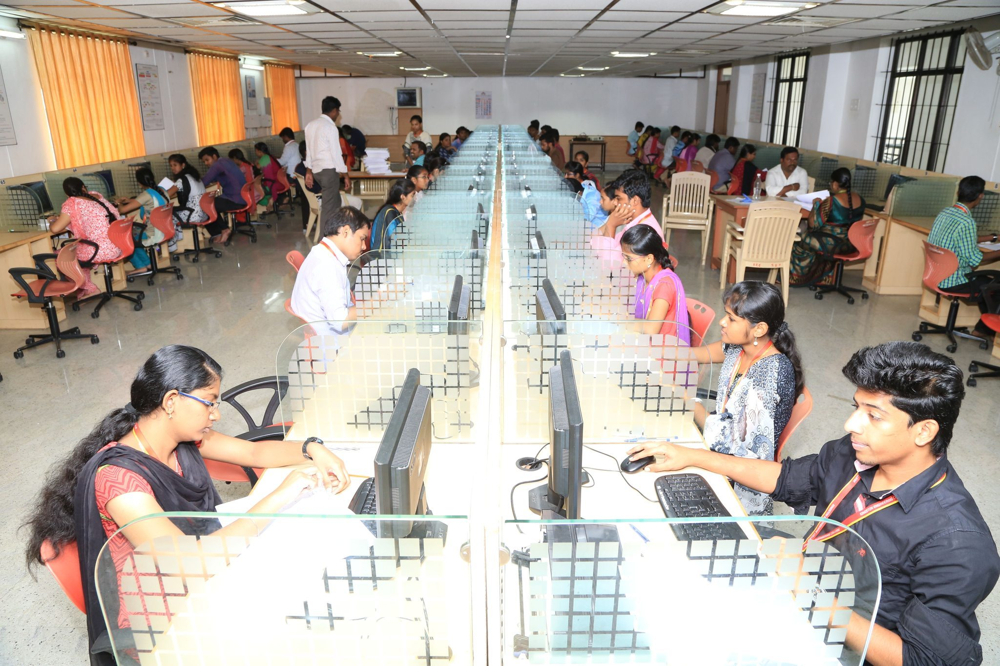
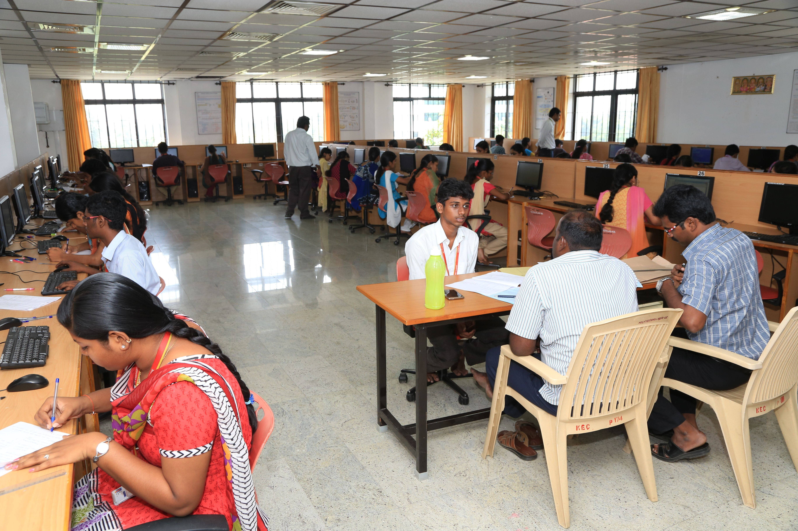
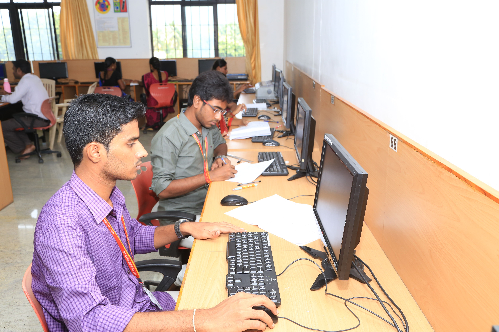
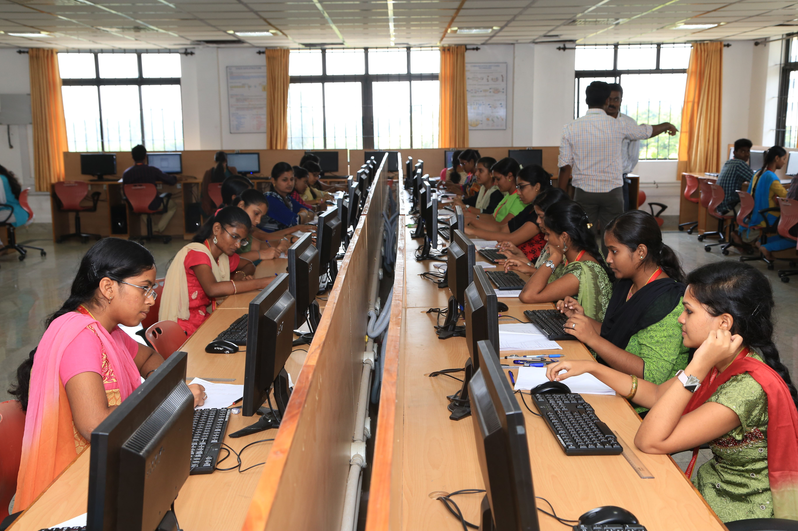
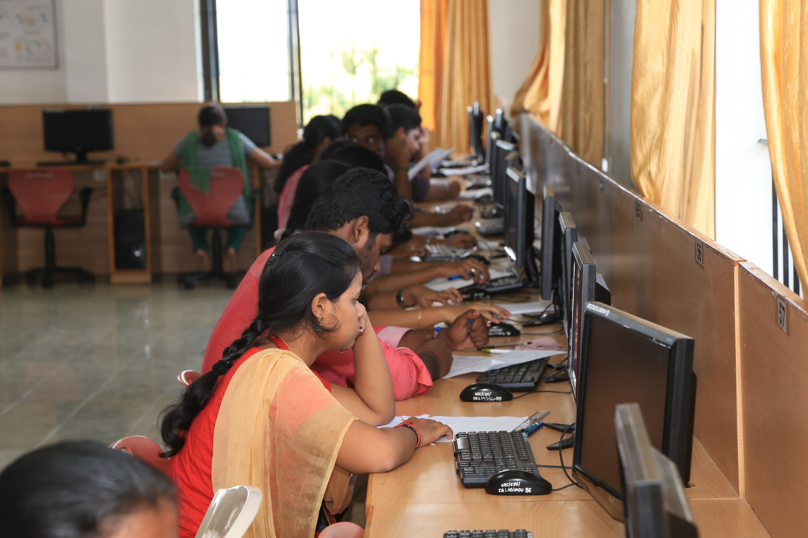
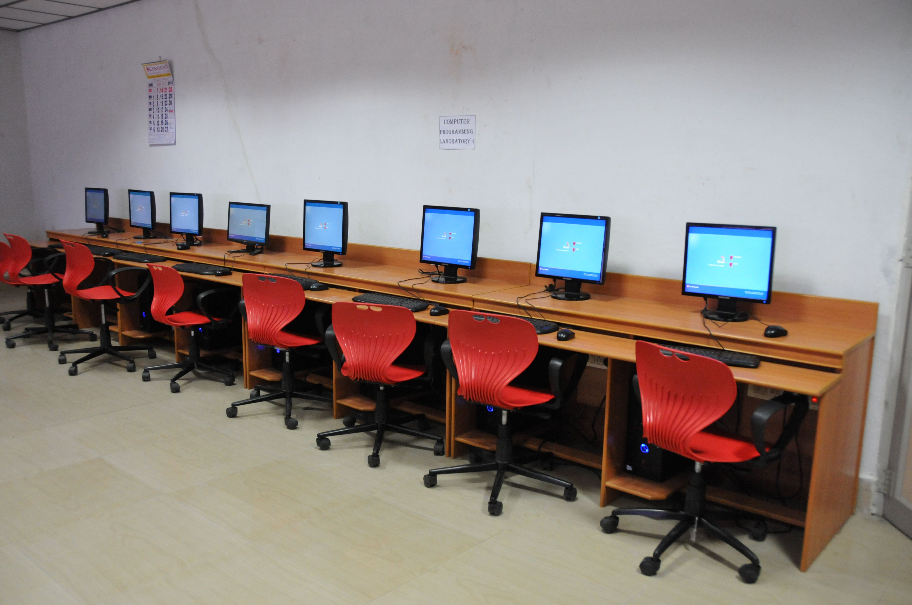
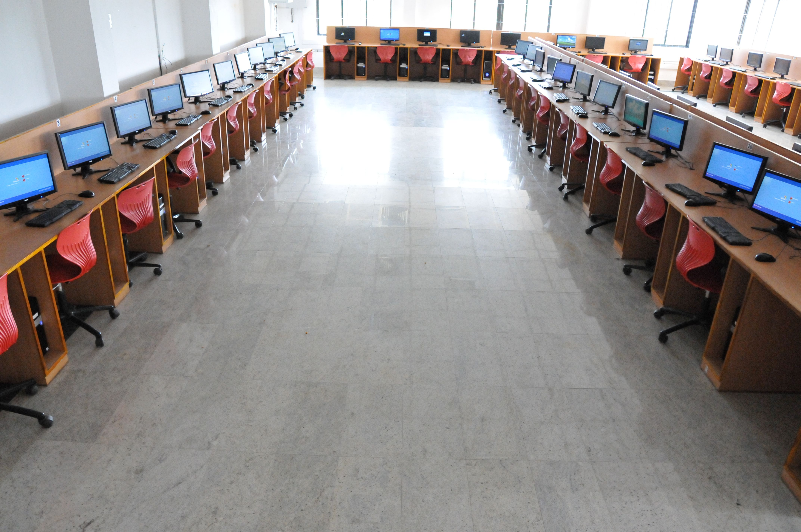
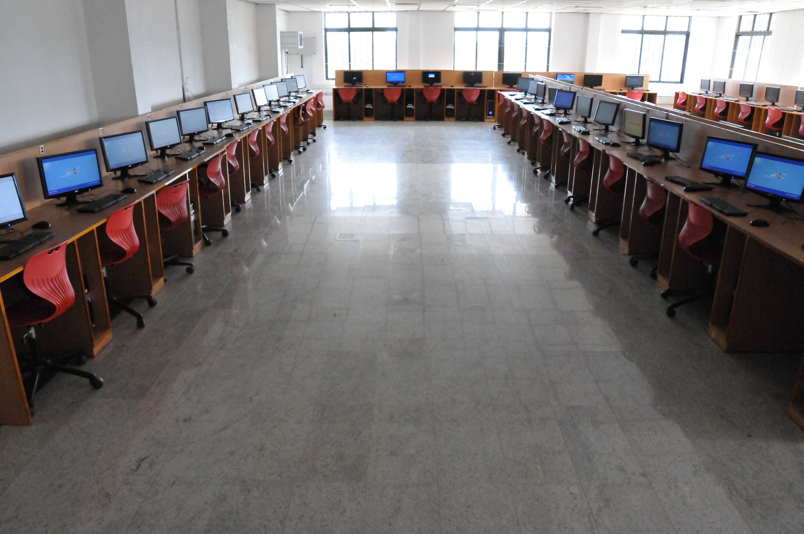
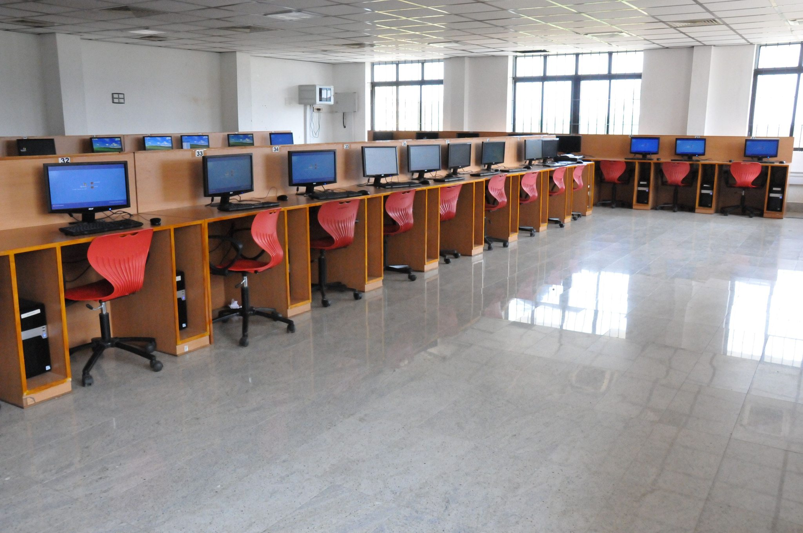
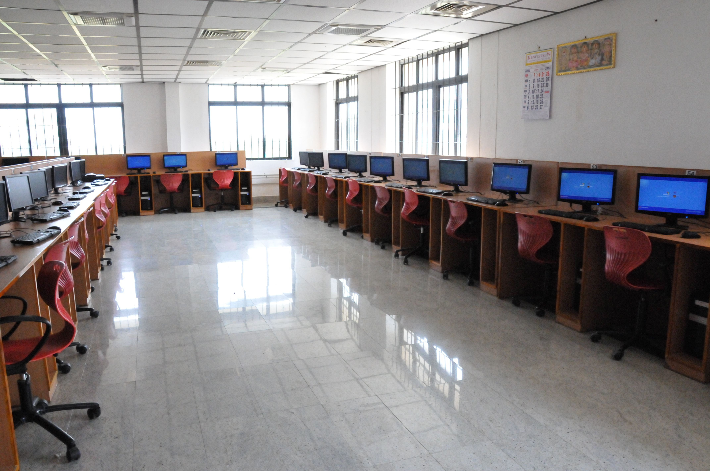

OVERVIEW
The Department of Artificial Intelligence and Data Science at Kingston Engineering College houses a state-of-the-art computer laboratory designed to provide students with hands-on practical experience in programming, data analytics, AI model development, and emerging technologies. The lab is equipped with high-performance workstations, GPU-enabled systems, and industry-standard software to bridge the gap between theoretical knowledge and real-world application.
The lab supports curriculum delivery, project-based learning, industry-sponsored training, competitive programming, and research activities in artificial intelligence, machine learning, data science, and cybersecurity domains.
Artificial Intelligence & Data Science Laboratory
The Artificial Intelligence & Data Science Laboratory is the primary computing hub for the Artificial Intelligence and Data Science department, featuring high-performance workstations equipped with the latest Intel/AMD processors, ample RAM, and SSD storage. The lab supports programming courses, algorithmic problem-solving, database management, web development, and software engineering projects. It serves as the training ground for programming languages including C, C++, Java, Python, and modern web frameworks. The lab also runs specialized sessions for competitive programming, hackathons, and industry-certification training.










Key Equipment & Capabilities: High-performance workstations, GPU-enabled systems for AI/ML, networked environment with 100 Mbps connectivity, licensed software including MATLAB, Oracle, Visual Studio Suite, and open-source development tools.